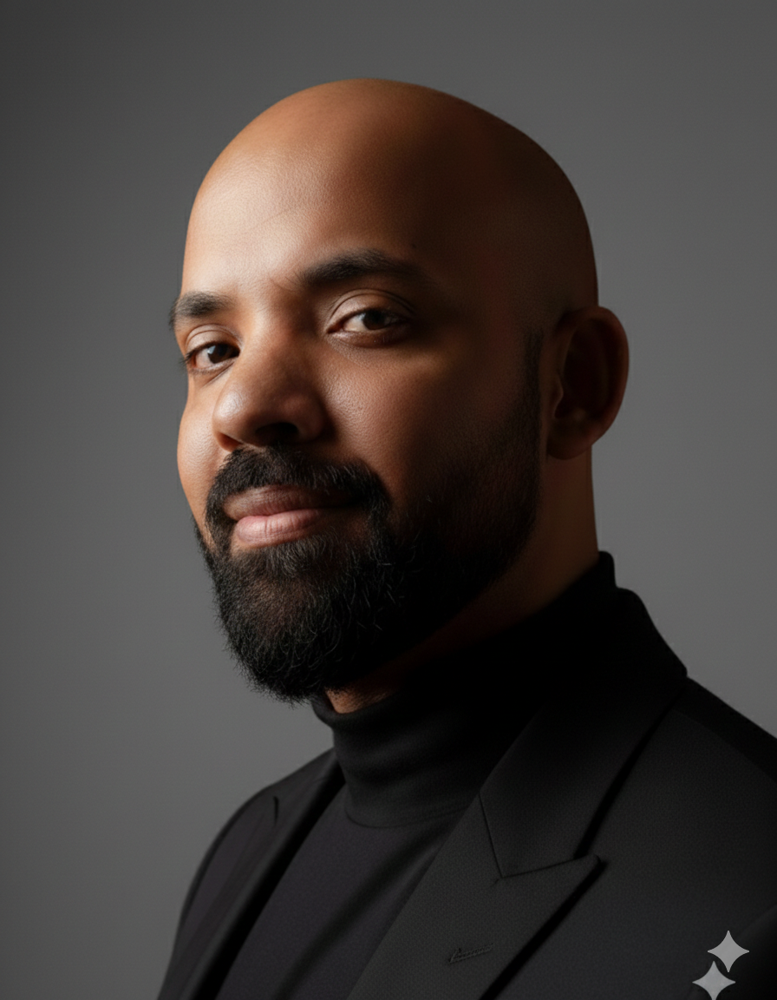

Hi, I'm Shehab Al-Masri.
Senior Data Analyst · Humanitarian Social Impact · Published Researcher
I build data systems that work in the hardest places. Over 4 years I've designed pipelines tracking aid delivery to 17,000+ beneficiaries across Yemen's conflict zones, modelled political violence trends for ACLED, and co-authored peer-reviewed research with Utrecht University and Wageningen University & Research. My work turns fragmented field data into decisions that reach people.
